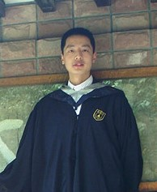

Yirui Wu
Assistant Professor
College of Computer and Information, Hohai University
Email: wuyirui1989@163.com
Office: Rm4123, QinXue Building, Hohai University Jiangning District, Nanjing
[中文版本]

I am currently an Assistant Professor at Hohai University. Before coming to Hohai, I obtained my Ph.D degree from Nanjing University in 2016. During my Ph. D study, I was with the IMAGE Lab under the supervision of Prof. Tong Lu and worked closely withDr. Shivakumara Palaiahnakote. I visited HongKong University of Science and Technology twice in 2012 and 2015, supervised byProf. Chiew-Lan Tai andDr. Oscar Kin-Chung Au. I received my B.S. Degree from Nanjing University in 2011 as well. My Chinese CV could be found here.
News
Research Interests
Publication [Full List]
Journal Papers
[J1]. Yirui Wu, Palaiahnakote Shivakumara, Tong Lu*, Chew Lim Tan, Michael Blumenstein, G. Hemantha Kumar. Contour restoration of text components for recognition in video/scene images. IEEE Transactions on Image Processing, online publication, 2016. (SCI, CCF-A) [Paper] [BibTex]

Abstract: Text recognition in video/natural scene images has gained significant attention in the field of image processing in many computer vision applications, which is much more challenging than that in plain background images. In this work, we aim to restore complete character contours in video/scene images from gray values, in contrast to the conventional techniques that consider edge images/binary information as inputs for text detection and recognition.
[J2]. Yirui Wu, Oscar Kin-Chung Au, Chiew-Lan Tai, Tong Lu. HIRM: a handle-independent reduced model for incrememntal mesh editing. Computer-Aided Geometric Design, 35(36):56-68, 2015. (SCI, CCF-B) [Paper][BibTex]

Abstract: Most existing handle-based mesh deformation methods require costly re-computation for every handle set updating, namely, adding or removing of handles on the mesh surface. In this paper, we propose a reduced deformation model that is independent of handle configuration, allowing users to dynamically update the handle set without noticeable waiting time.
[J3]. Yirui Wu, Palaiahnakote Shivakumara, Wei Wang, Tong Lu, Umapada Pal. A new ring radius transform based thinning method for multi-oriented video characters. International Journal on Document Analysis and Recognition (IJDAR), 18(2):137-151, 2015. (SCI, CCF-C) [Paper] [BibTex]
Abstract: Thinning that preserves visual topology of characters in video is challenging in the field of document analysis and video text analysis due to low resolution and complex background. This paper proposes to explore ring radius transform (RRT) to generate a radius map from Canny edges of each input image to obtain its medial axis.
Conference Papers
[C1]. Yirui Wu, Xianli Zhou, Tong Lu, Guo Mei, Linbi Sun. EvaToon: a novel graph matching system for evaluating cartoon drawings. The 23th International Conference on Pattern Recognition (ICPR'16), Cancun, Mexico, 2016. (EI, CCF-C) [Paper][BibTex]
Abstract: Imitation cartoon drawing is an important skill for cartoonists, requiring quantity of efforts on practising and guidance. In this paper, we propose EvaToon, an imitated drawing evaluate system, which automatically assigns judging scores and marks improper drawing regions.
[C2]. Yirui Wu, Tong Lu, Zehuan Yuan, Hao Wang. FreeScup: a novel platform for assisting sculpture pose design. International Conference on Multimedia and Expo (ICME'15), Torino, Italy, 2015. (EI, CCF-B, oral, acceptance rate: 15%) [Paper][BibTex]
Abstract: Sculpture design is challenging due to its inherent difficulty in characterizing an artwork quantitatively, and few works have been done to assist sculpture design. We present a novel platform to help sculptors in two stages, comprising automatic sculpture reconstruction and free spectral-based sculpture pose editing.
[C3]. Yirui Wu, Oscar Kin-Chung Au, Chiew-Lan Tai, Tong Lu. HIRM: a handle-independent reduced model for incremental mesh editinig. The 9th International Conference on Geometric Modeling and Processing (GMP'15), Lugano, Switzerland, 2015. (EI, CCF-C, oral) [Paper][BibTex]
[C4]. Yirui Wu, Tong Lu, Jiqiang Song. A real-time animation framework using Kinect. The 13th Pacific-Rim Conference on Multimedia (PCM'13), Nanjing, China, 245-256, 2013. (EI, CCF-C) [Paper][BibTex]
[C5]. Feiming Xu, Tong Lu, Yirui Wu. Robust object tracking using motion context in crowded scenes. The 13th Pacific-Rim Conference on Multimedia (PCM'13), Nanjing, China, 550-560, 2013. (EI, CCF-C, oral paper) [Paper][BibTex]
[C6]. Limin Wang, Yirui Wu, Tong Lu, Kang Chen. Multiclass object detection by combining local appearances and context. The 19th International Conference on Multimedia (ACM Multimedia'11), Arizona, USA, 1161-1164, 2011. (EI, CCF-A, short paper) [Paper][BibTex]
[C7]. Limin Wang, Yirui Wu, Ziyuan Tian, Zailiang Sun, Tong Lu. A novel approach for robust survelillance video content abstraction. The 10th Pacific-Rim Conference on Multimedia (PCM'10), Shanghai, China, 660-671, 2010. (EI, CCF-C) [Paper][BibTex]
Patents
[P1]. Tong Lu, Yirui Wu, Liming Wang, Zhiyuan Tian, Zailiang Sun. A surveillance video content abstraction method. CN201010264070.X. (National Invention Patent, China)
[P2]. Tong Lu, Longfei Qin, Run Xing, Hao Wang, Yirui Wu, Wei Hu. A motion-driven 3D sculpture modeling method. CN201410093523.5. (National Invention Patent, China)
Education
-
Nanjing University
Ph. D - Computer Application Technology,
2011 - 2016
Thesis Title: Research on Key Techniques of Visual Scene Understanding and Interaction
-
Nanjing University
Bachelor of Science - Computer Science and Technology, 2007 - 2011
GPA: 4.13/5.0 (Top 25%)
Honors & Awards
- Outstanding Graduate, 2016
- Outstanding Student Leader, 2016
- National Scholarship, 2015
- Outstanding Student, 2013
- Guanghua Scholarship, 2013
- Outstanding Graduates at Provincial Level, 2011